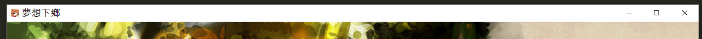
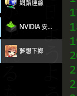

客製化你的遊戲
如果你想要客製化你的遊戲，最好瞭解一些關聯的知識，如html和css。畢竟，武裝自己的應該是知識，而不是一堆廢銅爛鐵。當然不學也沒關係吧……
修改配置
在工程的「工程配置.yaml」中，你可以指定一些和項目相關的參數。
基本設定
標題
爲你的遊戲起一個響亮的名字。
這個名字會顯示在標題欄。
主題css
選擇一個你喜歡的adv界面外觀。

預先配置的主題會在下面列出。
路徑設定
圖標
指定「圖標」來改變標題欄圖標。
標題: 夢想下鄉
圖標: 畫面/萃香.ico


(這個nvidia是什麼東西……)
標題畫面
指定「標題畫面」來使用一個title界面。你也許想要自己的title界面，如果你有一定的html基礎，這並不是什麼難事。
標題畫面: 標題畫面/title.html

title.html的寫法在進階/畫面的定製中介紹。
劇本入口
指定「劇本入口」來選擇開始遊戲時的劇本。
自定css
指定「自定css」後，你可以在你的css中改變adv畫面的外觀，比如更換遊戲的字體大小，添加漂亮的光標或者對話框等。
如果想要給遊戲，你可以使用自定css。自定css是adv頁面會額外引用的css，在其中覆蓋原有的css設定就可以完全改變畫面的樣貌。
詳細在進階/畫面的定製中介紹。
位置設定
主解析度
就是你的遊戲窗口的大小。你準備的CG啊，BG啊，最好都符合這個大小，否則切換圖片的時候會有奇怪的縮放表現(由於webkit的crossfade的奇怪特性)。
對了，因爲現在16:9很流行，所以在很多用戶的顯示器下，主解析度不是16:9的遊戲全屏時會有邊框。
還有就是，更改主解析度以後如果畫面元素的位置不對的話，可以自定css來解決。
默認立繪位置
不同人数时，各人从左到右的位置。
在鏡頭的簡化寫法中，如 + [潘大爺, 林梓雨] ，就會使用他們的默認立繪位置。
默認立繪位置:
1:
- [300,0]
2:
- [100,0]
- [550,0]
當畫面中有一個人—— 潘大爺 時， 潘大爺 就會被安排在 [300,0] 的位置。
當畫面中有兩個人——第一個是 潘大爺 ，第二個是 林梓雨 時， 潘大爺 就會被放在 [100,0] 的位置，而 林梓雨 就會被放在 [550,0] 的位置。
演出功能設定
自動淡入動作
當設定爲True時，出現了一個新立繪的場合(即不在上個鏡頭中出現)，自動應用動作「淡入」。
自動位移動作
當設定爲True時，一個立繪的位置改變的場合，自動應用對應的位移動作。
自動發言表情
當設定爲True時，一個人講話——且她的當前表情有對應的說話表情的場合，將她的表情變成對應的說話表情。
嵌入其他功能
比如說這個adv劇情到一半，要進入一個魔法打架的遊戲(當然這是你自己寫好的)。
這樣的情況下，我覺得好像應該把在 >py / >endpy裏調用你的遊戲。如果你的遊戲能嵌入pyqt5，在主窗口添加一個層，然後嵌入你的遊戲，在結束時把層消除就好了。
我也沒試過……
不過現在的遊戲引擎很多都能生成html5遊戲，說不定還不錯？
預先配置的主題
無
黑色花紋邊框
實框
線框